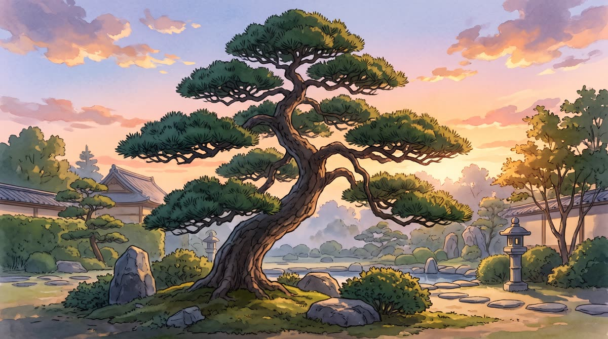

業界
松之助松太郎、「世界一の松屋」を宣言 根拠は親方の勘
牛丼の店とまちがえた電話が、早くも3件あったという。


牛丼の店とまちがえた電話が、早くも3件あったという。
到着は「潮しだい」。はしごを積み忘れたことに沖で気づいた。

次回の議題は「では松ぼっくりとは何か」に決まった。

親方は「松の店にあるのだから松ぼっくりだ」と説明している。

初日の正解率は5割。親方は「伸びしろしかない」と前向きだ。

松でない木のご相談は、お近くの造園屋さんへ。


文字を小さくする案は、親方が「松は縮めない」と退けた。
松のことだけを、松のように、まっすぐ（曲がっていますが）考えています。
迷いがありません。ご相談の答えは、いつも松です。
作業のあとも、気がすむまで松を眺めて帰ります。
単位は「松ぼっくり」。親方の勘で、その場でお出しします。
庭づくりから日々のお手入れまで。ただし松にかぎります。
お庭の広さに合わせて、松と松と松の配置をご提案します。
一本から承ります。九十九本までなら、気持ちで植えます。
季節ごとに伺います。親方が松と相談して決めます。
「これは松ですか」からどうぞ。たいてい違います。
あなたのお庭に松を植えたら、どうなるか。その場でお見積り（松ぼっくり建て）まで出ます。
お問い合わせから、親方が松を眺めて帰るまで。
いちばん多いのは「本当に松だけですか」です。
はい。松だけです。
お近くの造園屋さんをおすすめします。松竹梅の「松」だけ、当店が担当します。
ご安心ください。作業のあと、お庭に落ちます。
「松の人」で通じます。